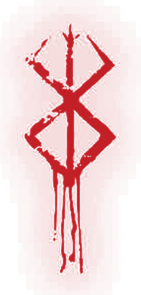

Save the date
October 06, 2026
a Tuesday
Kindly hold the day

The hour
Five o’clock in the evening
Reception
Smoque Bistro
Carlos P. Garcia East Avenue Bool, Tagbilaran City, Bohol
Attire
Black and burgundy
A formal invitation will follow.
Everything else lives on the site.
your-site-address-here
Front · Back — shown at true size
Print to PDF, don’t screenshot. Use your browser’s print dialogue, set paper to 5 × 7 in, scale to 100%, margins to none, and make sure “background graphics” is ticked — without it the card prints as black text on white paper.
Ask for rich black, not 100% K. This card is almost entirely one very dark colour. A press asked for plain black ink alone will render it as a flat, chalky grey. The usual recipe is roughly 60C 40M 40Y 100K. Say the words “rich black” to whoever prints it and they will know.
A home printer will struggle. Full-bleed dark stock is where inkjets band and streak. This wants a print shop, on an uncoated or matte stock — gloss will fight the photograph rather than help it.
Print the built copy, not this one. The site address on the
back is written in by build.sh, so in the repository it is still
a blank marked in rose. Build first and print dist/card/, or the
cards come back with a dashed line where the address should be. Either way,
pull a single proof before committing to the full run.